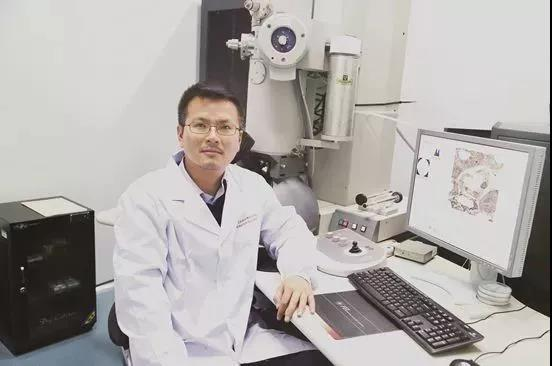

- 中共中央统一战线工作部
- 中共河南省委统战部
- 开封市统战部
- 河南大学
- "河大统战"杂志
师冰洋：那些年在铁塔下 发布时间：2019-11-15 17:17:44 作者：师冰洋

那些年在铁塔下
师冰洋，河南开封人，博士。河南大学黄河学者特聘教授，生物医学工程方向带头人。“青年千人计划”专家现为河南大学药学院院长。主要从事老年痴呆症的生物治疗，疾病的早期精准检测和基因治疗等前沿研究工作。
省委常委、统战部部长孙守刚出席会议并讲话，副省长戴柏华主持会议。会议指出，2019年全省统一战线深入学习贯彻习近平总书记关于加强和改进统一战线工作的重要思想，强化政治引领，紧扣中心工作，注重守正创新，各领域工作有突破、有亮点、有提升，呈现出团结奋进、活跃出彩的良好局面。
近日，喜闻母校河南大学入选“双一流”建设高校，生物学人选“双一流”建设学科，也是恰逢母校建校105周年和生命科学学院恢复招生30周年之际，我的内心激动不已。我们生物学学科历经几次办学停办，从无到有，历经艰辛，成为河大的龙头学科，进入国家队，完成几代河大人的夙愿，这是对有百年历史的著名学府办学历程的肯定，是对历经沧桑、百折不挠、自强不息的精神的肯定，弥足珍贵。回首在河大求学的往事，无不历历在目，十分激动，也倍感欣慰，时光拉着记忆的脚步向我奔来。
2002年9月，懵懂而又青涩的我拖着行李，来到明伦校区大礼堂广场前的迎新摊点报到。清晰地记得，那天广场彩旗飘扬，活力四射、青春飞扬，古朴典雅的校舍扑面而来，铿锵有力、深厚而又悲壮的校歌响彻整个校园，这所学校深深吸引着我。那年入学的9月份，恰好赶上河大建校90周年，名家汇集，著名校友回访，深深震撼了我。中央电视台的“同一首歌”栏目走进了河南大学，那夜河大沸腾了，杨洪基的一首《那就是我》唱得如思如慕、如泣如诉，情深意切地唱出了游子内心深切的呼喊，让我终生难忘。军歌嘹亮，那年我们学院在军训中获得全评第一名，是我们进入大学第一堂课的成绩，也让我对大学生活信心倍增。
接下来4年的大学生活里，我走过了清新、迷茫、奋斗的过程。那时学哥学姐们告诉我，大学有4个阶段：“不知道不知道，知道不知道，不知道知道，知道知道”，十分真切地印证了从大一到大四毕业的整个过程。慢慢地我意识到我已经深深地爱上了这座学府。学校和学院的老师们上课特别卖力，生怕学生听不懂，那时候我才知道大学老师的知识有多渊博。每天清晨，在综合楼和10号楼前花坛中总有朗朗的读书声，学生们特别的勤奋朴实，珍惜每一寸时光。
在与同学和生科院老师愉快的相处中，在院学生会充实的工作里，珍贵的大学时光不知不觉中过去了一半，也开始感悟人生，思考未来，但还是感到茫然，不确定自己想要的人生是什么，不知道怎样的人生才更有意义……直到有一天听了宋纯鹏老师的学术报告，我才了解到，原来做科研的人是可以有丰富的人生经历，是可以有趣并且有成就感的，科研生涯原来并不是死板而枯燥乏味的。我真切地体会到了科研的魅力，隐约地意识到这也许才是一种有意义、有挑战性，并且完全可以同时丰富而有趣的生活方式。因此，我参加了硕士研究生统一招生考试。
毕业的那年6月，每天都是万里无云，没有了迷茫和浮躁，而是踌躇满志，答辩，合影，臭美地穿上学士服，拋起学位帽。我们要走了，要告别母校了，依依不舍。散伙饭上和似曾相识的、同甘共苦的人干杯，互道前程似锦，一路顺风；和曾经相处4年的老师们告别，最难忘那心里奇怪的哽咽：老师们说“常回家看看”。
时光荏苒，转眼11年过去了，2006年到上海读硕士研究生，2010年到澳洲攻读博士学位，走过多个城市，在陌生的城市看见母校的名字，听到母校的音讯和发展的消息，依然温暖不已，激动万分。“快来看啊，那里有我，那里有我。”每次翻开手机中收藏的香港中文大学陈小章的文章《再造中国大学——访问河南大学有感》，我和母校一样，踏踏实实地走过每一步人生道路，时时刻刻不忘母校的教诲，实字当头，老实做人，诚实做事。
在离开母校这些年里，每年我都要回母校看望曾经的老师们，听听他们的教导，看看生科院的小红楼。每次回母校在老校区行走的时候，“近乡情更怯”油然而生，仿佛能看到自己从远方天真无邪地走来。睹物思情，物是人非，像个路人甲飘荡在绿荫下、长廊中。
2015年我回母校工作，在校领导和院领导的特别关怀和帮助下，组建河南大学一麦考瑞大学生物医学联合创新中心，希望能给生物学科的建设和学院的发展贡献自己的微薄之力。
文章转载自 2019-11-12 铁塔风铃微信公众平台